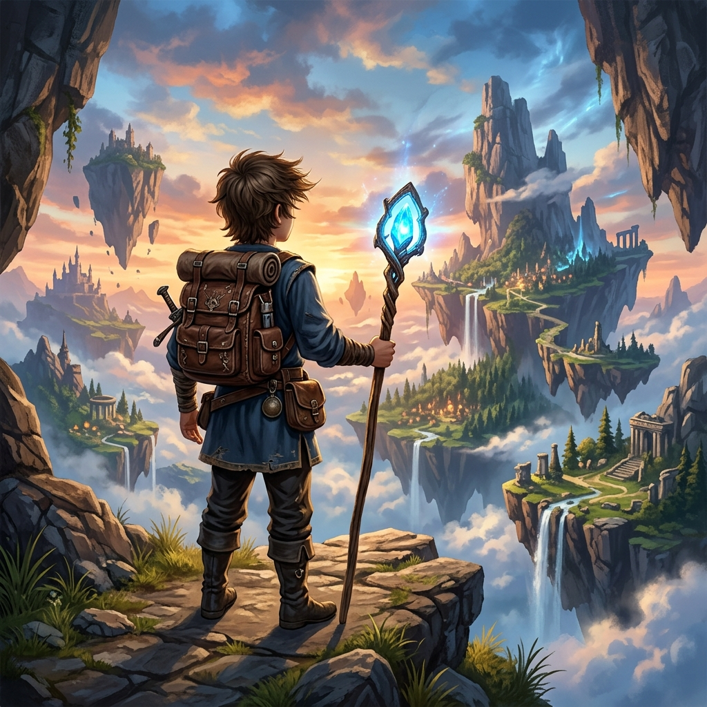

Which node will you visit next?
Traverse the graph starting from the red node A and visit all nodes using BFS.

Welcome, brave Pathfinder! The magical kingdoms are fracturing. Restore the ancient energy Ley Lines using your knowledge of Graph Traversal algorithms!
Compare the two legendary paths of graph traversal side-by-side:
Explores all nodes at distance 1, then distance 2, etc. It acts like expanding circular waves in a lake.
Uses a First-In, First-Out queue. Newly found neighbors wait in line; we visit older neighbors first, preventing early deep diving.
Why? Since it explores in order of hop-distance, the first time BFS hits a target node, it is mathematically guaranteed to be the shortest path in terms of edges traversed!
Can be high on wide networks because it must hold all nodes of the active wavefront in the Queue simultaneously.
Plunges along a single path to its absolute dead end, backtracking only when no unvisited neighbors remain.
Uses a Last-In, First-Out stack. The absolute newest node discovered is popped next, forcing the path straight forward.
Why? Since it blindly dives deep down whichever branch is chosen first, it may take a winding 10-step path to a target node that was actually a direct 1-step connection!
High on extremely deep graphs (due to deep stack frames) but highly efficient and minimal on wide, shallow graphs.
Want to see how these theories play out in real time? Click the simulation showdown to load Elderwood Grove and watch BFS and DFS auto-simulate parallelly side-by-side!